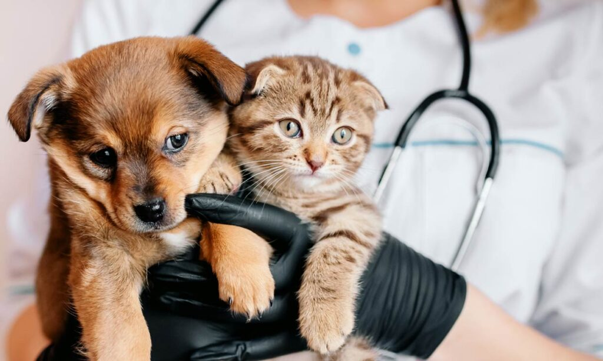
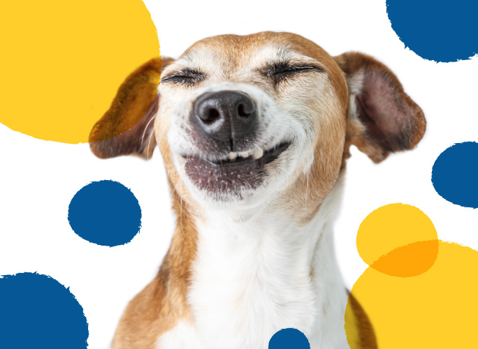
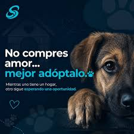

Nuestros Programas de Asistencia
En Patitas Felices desarrollamos diferentes iniciativas para rescatar, rehabilitar y encontrar hogares responsables para los animales de la comunidad. Te invitamos a conocer cómo trabajamos y a sumarte a revisar los requisitos generales para participar.
1. Rescate y Rehabilitación Médica

Nos encargamos de retirar de la vía pública a animales en situación de riesgo, abandono o maltrato. Les brindamos atención veterinaria inmediata, castración, vacunación y todo el tratamiento necesario para su recuperación física y emocional.
Dirigido a: Animales callejeros en situación de vulnerabilidad extrema y animales denunciados por maltrato en la zona.
Cómo participar: Podés colaborar como Hogar de Tránsito para cuidar a un animal durante su recuperación, o realizar donaciones de medicamentos e insumos veterinarios.
2. Adopciones Responsables

Buscamos el hogar ideal para cada uno de nuestros rescatados. Realizamos un seguimiento exhaustivo de las solicitudes de adopción para garantizar que las familias cumplan con las condiciones necesarias para brindarles una vida digna y segura.
Dirigido a: Familias y personas individuales que deseen incorporar un nuevo miembro a su hogar de manera consciente y definitiva.
Cómo participar: Completando el formulario de pre-adopción en nuestra sede o postulándote para participar en nuestras jornadas comunitarias de adopción los fines de semana.
3. Concientización y Talleres

Creemos que la educación es la base del cambio. Dictamos talleres en escuelas y centros comunitarios sobre la importancia de la tenencia responsable, los beneficios de la castración temprana y el respeto hacia los derechos de los animales.
Dirigido a: Instituciones educativas, niños, adolescentes y vecinos interesados en mejorar la convivencia con la fauna urbana.
Cómo participar: Si sos docente o directivo, podés solicitar una charla para tu institución. Si querés ser voluntario, te capacitamos para dictar los talleres.